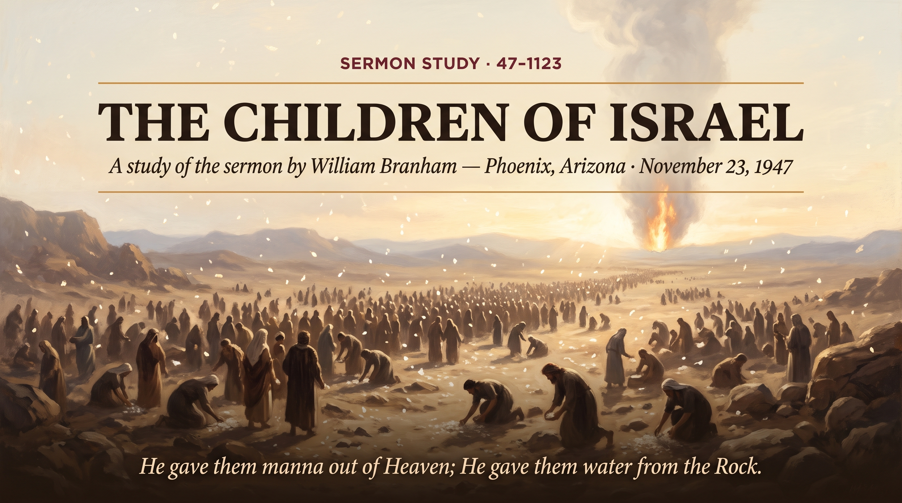

William Branham · Shriner Temple, Phoenix, Arizona · November 23, 1947
♫ Listen to or read the full sermon at Voice Of God Recordings →

Three weeks after the Angel of the Lord commissioned him at the start of this Phoenix campaign, Brother Branham is standing at the Shriner Temple on the fourth Sunday of an eight-week revival, and the Angel has come to him again, silently this time, standing by the door of his room, gone the instant he raised his head off the floor. He doesn't need the Angel to speak twice to remember the warning He'd already given: that this ministry is a gift of healing, not a sideshow of miracles, and that leaning on the spectacular instead of the gift itself will cost a man the trust of the very people he's been sent to help. That warning sits underneath everything else in this sermon.
This message is the fourth installment of a wilderness series Brother Branham has been preaching Sunday by Sunday through this campaign, the children of Israel brought up out of Egypt, the striking of the rock, the lifting up of the brazen serpent, and now this one, tying the whole journey together under a single truth: everything Israel needed in that wilderness came to them because they were under the blood. Hungry, God rained manna from Heaven. Thirsty, God split the rock. Sick, God gave them healing power. Not because they deserved it, Brother Branham makes a point of saying plainly that Israel murmured, doubted, and grumbled the whole way through, but because the blood placed on the doorposts back in Egypt was still covering them out in that wilderness, exactly the way the Blood of Jesus Christ covers a believer today, sins and shortcomings included.
Brother Branham points to Balaam as the man who looked at Israel's condition, their grumbling, their unbelief, their rough edges, and concluded God couldn't possibly still be blessing them. He was wrong, and he was wrong for a reason worth sitting with: God wasn't honoring Israel's behavior. He was honoring His own atonement. That's the whole message compressed into one sentence, and it's exactly why the Church today can still walk in the same provision, the same healing power, the same manna, no matter how far short any of us still fall.
Brother Branham doesn't just teach it, he shows it that same service, a blind baby, carried up in its mother's arms, prayed for and held right there in his own arms. He watches its eyes track his hand back and forth across its face for the first time. The mother sees it happen in real time. That's not a story from Egypt three thousand years ago; that's manna falling the same afternoon he's preaching about manna falling.
Source: The Children Of Israel, preached November 23, 1947, Shriner Temple, Phoenix, Arizona. Text © Voice Of God Recordings. This study reflects my own understanding of the message as a believer, not a verbatim reproduction of the sermon.
← Back to Sermon Studies